Computadora
Actividades
Manual de la computadora
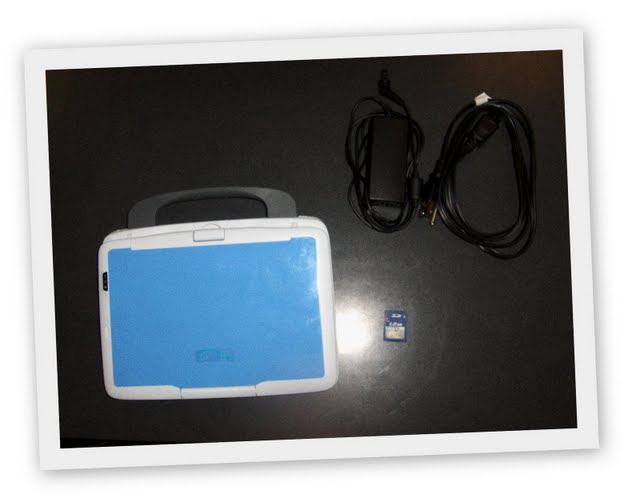
Partes de la computadora
El frente
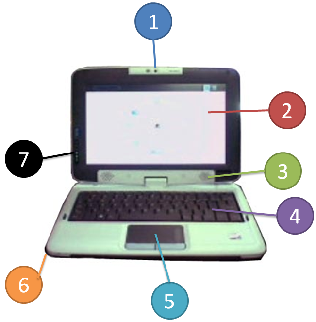
1. Cámara fotográfica: Sirve para tomar fotografías y vídeos. La cámara puede girar 180°.
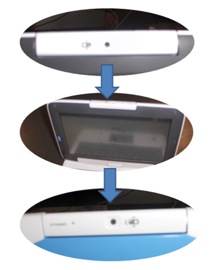
2. Pantalla: Todo será mostrado aquí.
3. Bocinas: Permite oír los sonidos que pueden producir algunas actividades.
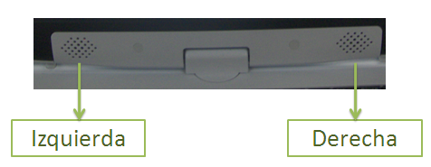
4. Teclado: Sirve para escribir.
5. Placa para tocar: Sirve para mover el apuntador y seleccionar cosas.
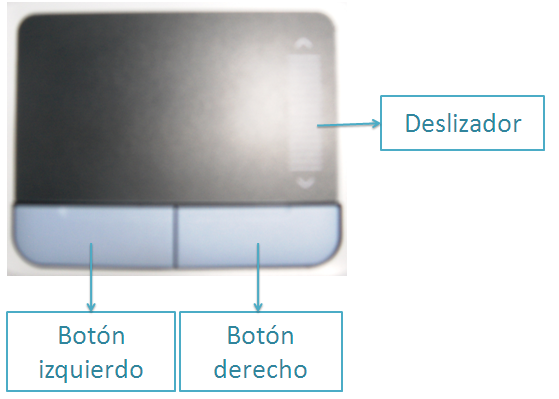
6. Micrófono: Sirve para cuando quieres grabar tu voz.
7. Indicadores
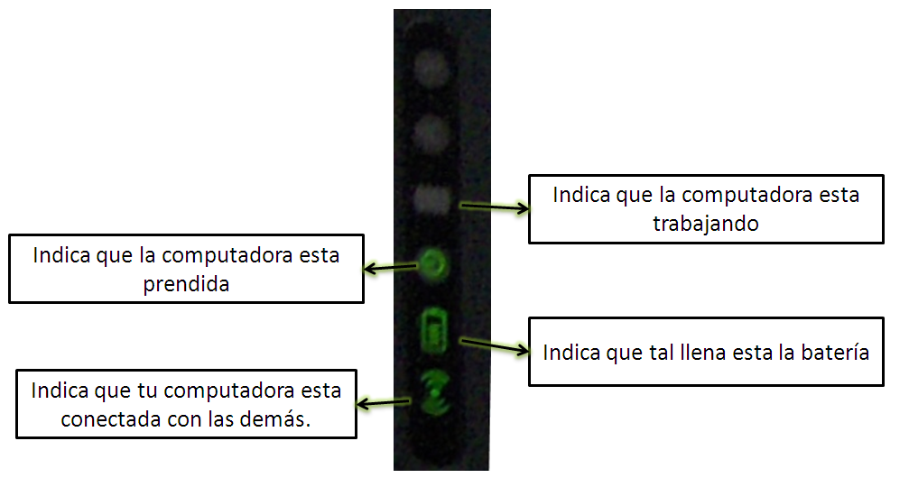
Lado izquierdo
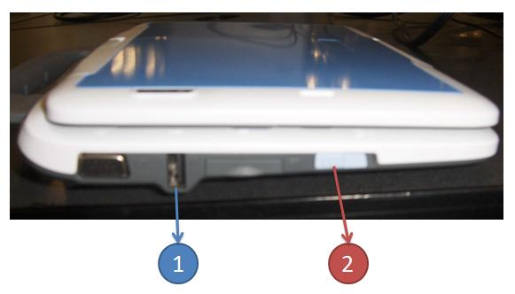
1. Puerto USB: Sirve para conectar el ratón.
2. Interruptor: Sirve para prender y apagar la computadora.
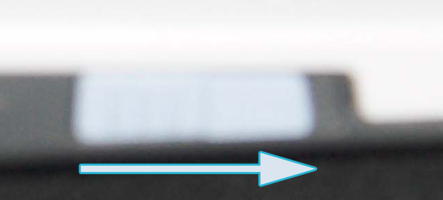
Lado derecho
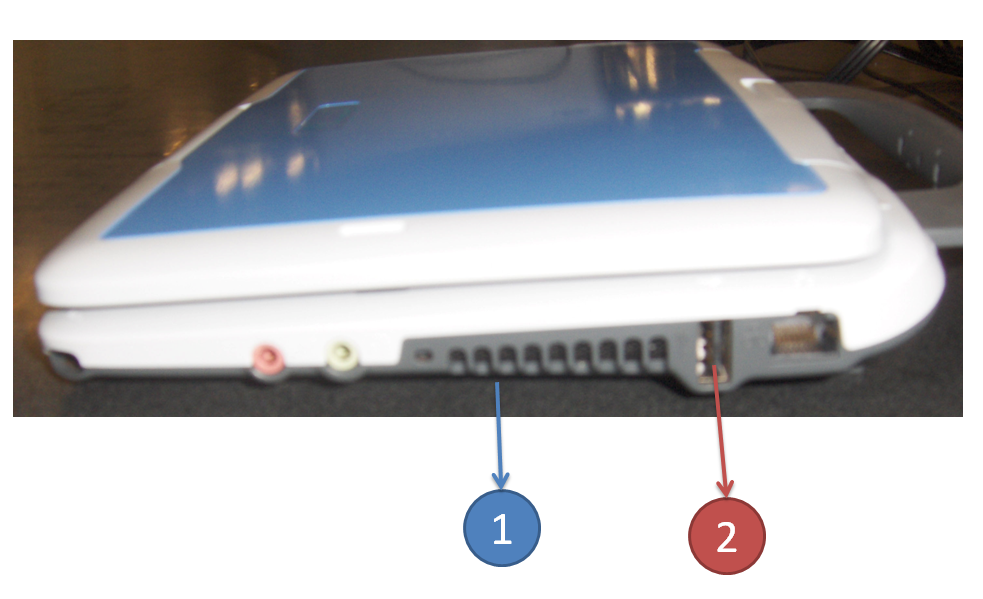
1. Ventanas: Le permite a la computadora mantenerse fría. Si la computadora está prendida no bloquees este espacio.
2. Puerto USB: Sirve para conectar el ratón y memorias USB.
Atrás
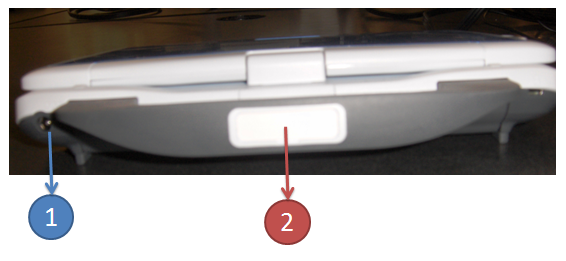
1. Espacio para el cargador: Es aquí donde conectas el cargador de la batería. La batería cargada dura aproximadamente 3 horas. Cuando termines de usar la computadora, no olvides ponerla a cargar.
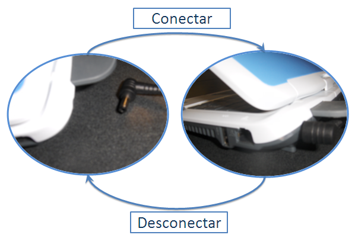
2. Nombre: Ahí puedes poner tu nombre para que identifiques fácilmente cuál es tu computadora.
Reverso
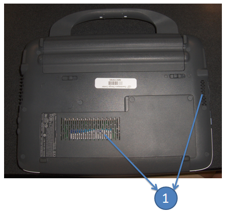
1. Ventanas: Le permite a la computadora mantenerse fría. Si la computadora está prendida no bloquees este espacio.
El monitor
Cuando abro mi computadora, a lo que se levanta se le conoce como monitor. Tiene la propiedad de que puede girarse lo cual es útil cuando tomas fotografías y vídeos.
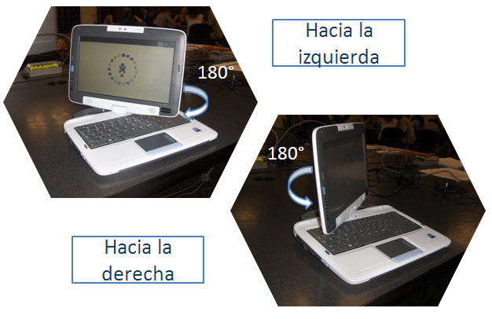
¿Cómo prender mi computadora?
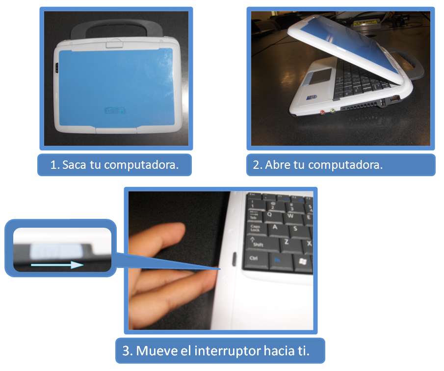